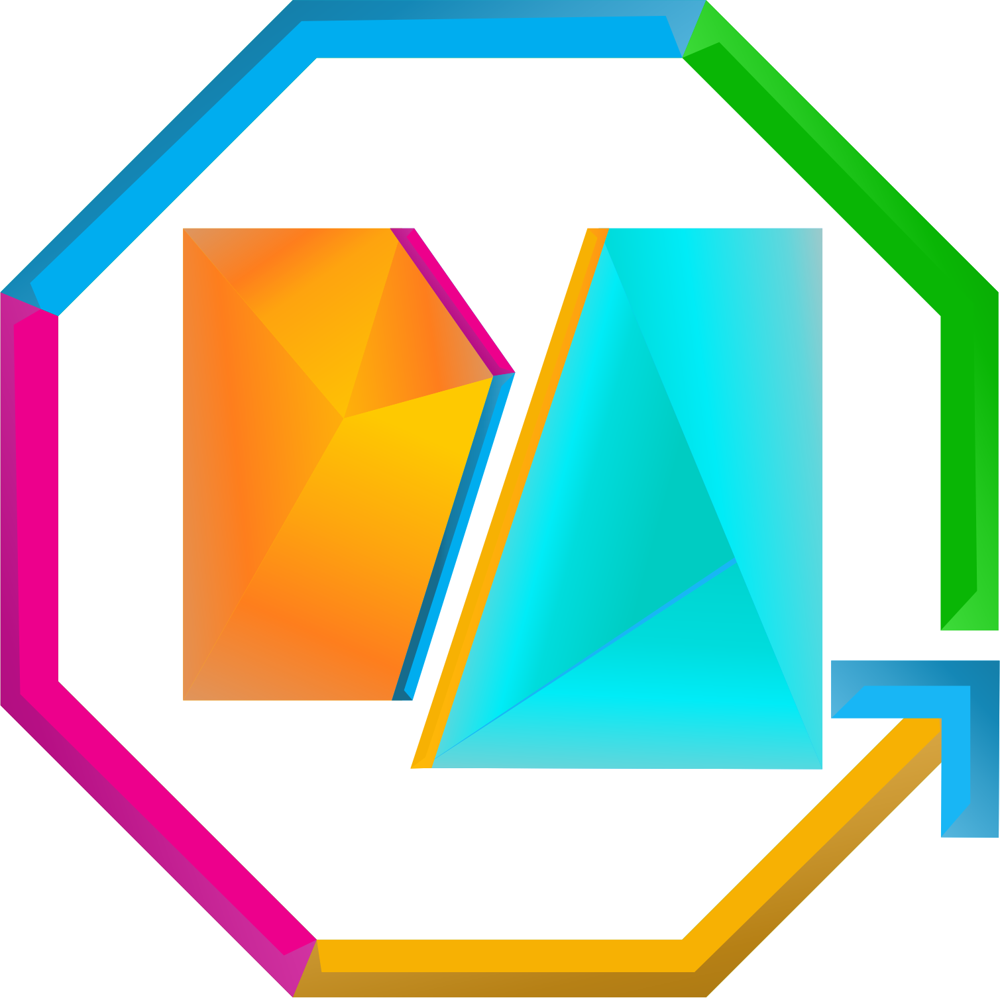

Markaz Qur’an Al-Maa’un
Desa Sei Kamah II Kec. Sei Dadap Kab. Asahan Prov. Sumatera Utara
0822-1188-2667 | markazyatimduafaqurani@gmail.com
LAPORAN HASIL BELAJAR SANTRI
Semester ... | Tahun Ajaran ...
Nama Santri
: ...
Nomor Induk (NIS)
: ...
Jurusan
: ...
Kelas
: ...
Pengasuh : ...
A. Capaian Akademik
| No | Mata Pelajaran / Materi | KKM | Bobot | Nilai | Pred |
|---|
Rata-rata Nilai Akademik
00.0
Indeks Prestasi (IP)
0.00
B. Peta Kemampuan
Nilai Tahfidz
0
Nilai Akhlak
0
C. Laporan Tahfidz
Target Hafalan3 Juz / Semester
Hafalan (Ziyadah) terakhir-
Muroja'ah-
D. Akhlaq (Disiplin)
| Kedisiplinan Ibadah | - |
| Kebersihan & Kerapian | - |
Mengetahui,
Pengasuh
...
Asahan, ...
Waka Bidang Kurikulum
...
Dokumen ini dicetak secara digital oleh Sistem Informasi Markaz Qur’an Al-Maa’un.